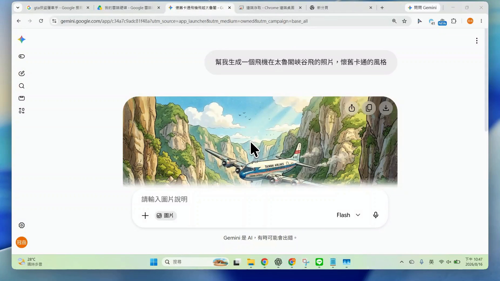
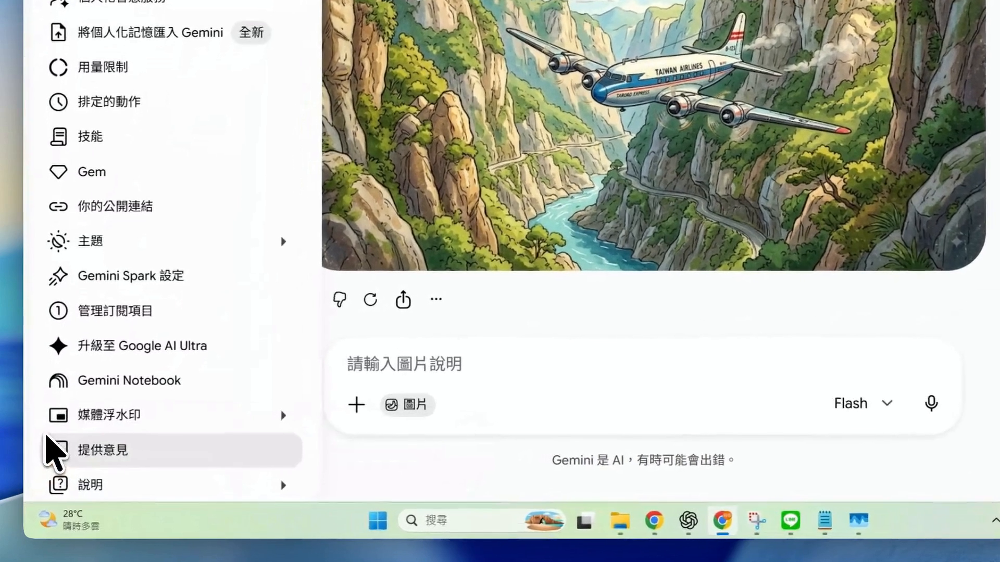
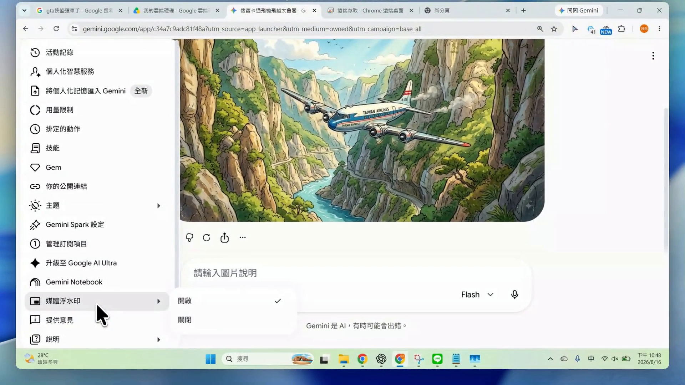
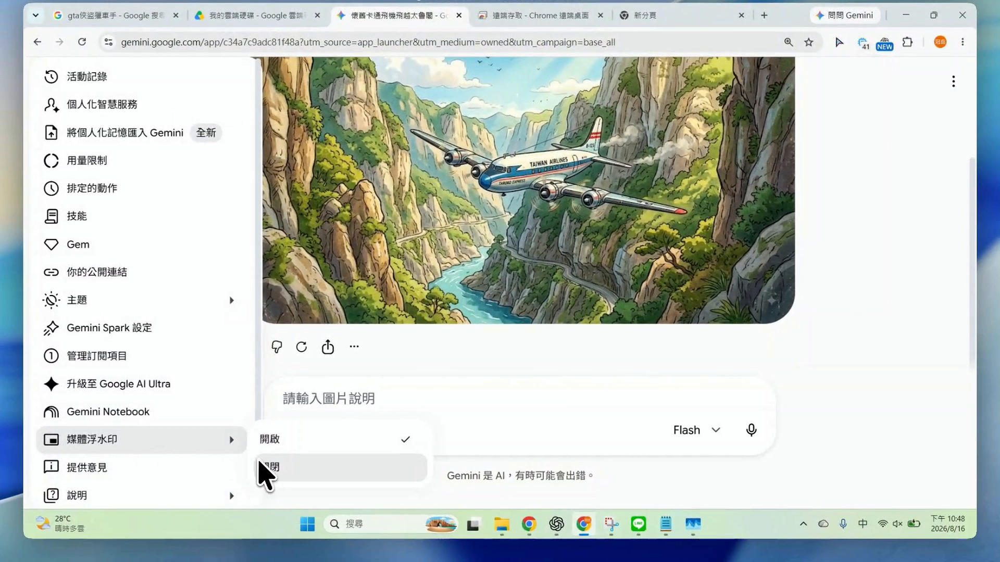
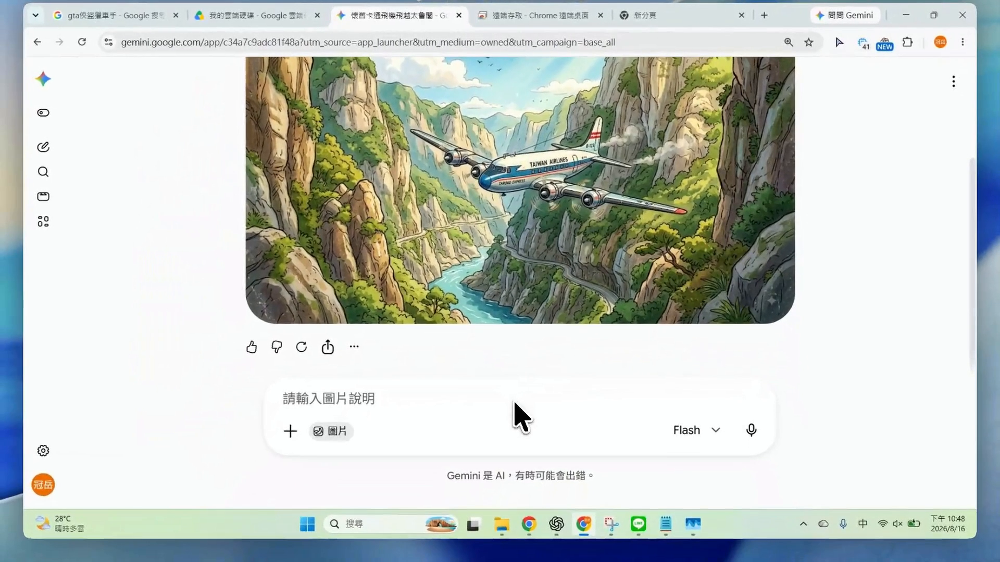
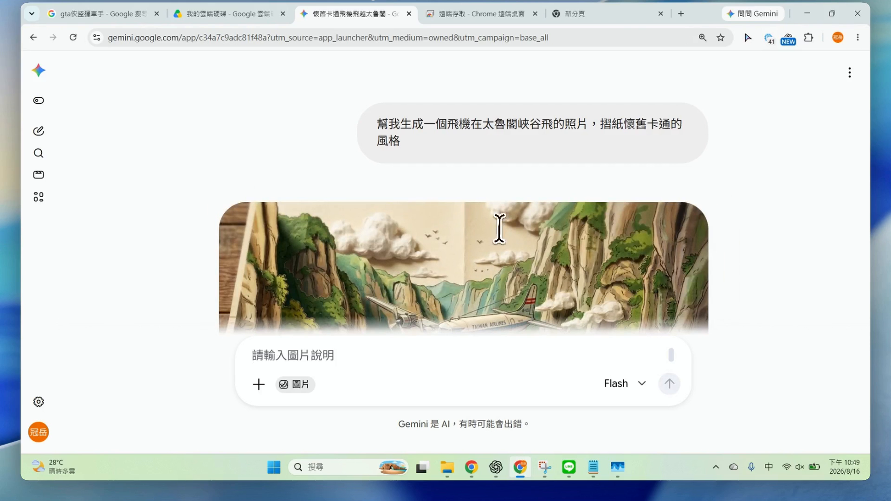
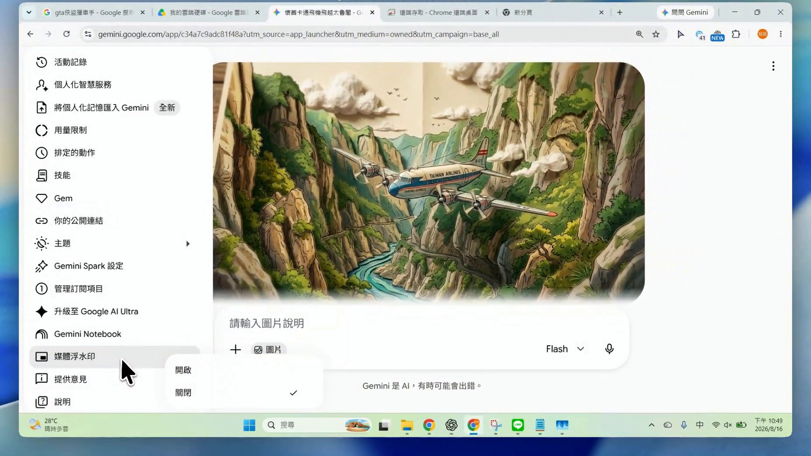

EP079｜Gemini 可以去除浮水印了！
今天只做一件事
把 Gemini 的「媒體浮水印」從開啟改成關閉，再重新生成一張圖片，確認新圖片不再顯示 Gemini 的可見浮水印。
完成後，你會知道：
- 「媒體浮水印」設定在哪裡。
- 怎麼把它關閉。
- 為什麼舊圖片不會自動改變。
- 關閉可見浮水印後，圖片仍可能保留哪些 AI 標記。
本集處理的是 Gemini 自己提供的「媒體浮水印」設定，不是教你移除別人的簽名、品牌標誌或版權浮水印。
開始前先準備
- 登入可以使用 Gemini 生圖功能的 Google 帳號。
- 準備一段不含學生姓名、照片或其他個資的生圖提示文字。
- 如果剛才已經生成過圖片，可以保留在畫面上，等等用來比較開啟與關閉後的差異。
不同帳號、地區或版本看到的功能可能不完全相同。本講義畫面記錄於 2026 年 8 月 16 日。
STEP 1｜先看原本生成的圖片
影片一開始，畫面上已經有一張 Gemini 生成的飛機圖片。這張圖是等等要比較的「設定變更前」版本。

先不用下載，也不用修改提示文字。今天要測試的是設定，所以前後兩次最好使用同一段提示文字。
STEP 2｜打開左下角的帳號選單
在 Gemini 畫面左下角，點自己的帳號名稱或頭像，打開選單。

選單中如果看得到「媒體浮水印」，就可以繼續下一步。
沒看到怎麼辦？
先重新整理頁面，再確認自己使用的是正確帳號。這項功能可能分批開放；若選單仍沒有「媒體浮水印」，先不要亂改其他設定，等帳號取得功能後再操作。
STEP 3｜打開「媒體浮水印」
把游標移到「媒體浮水印」，右側會出現兩個選項：
- 開啟
- 關閉
影片中的帳號原本勾選的是「開啟」。

這個選項控制的是 Gemini 生成媒體上看得到的 Gemini 浮水印。
STEP 4｜選擇「關閉」
點一下「關閉」。看到勾選記號移到「關閉」，才算設定完成。

設定改好後，不需要另外找儲存按鈕。回到對話畫面，準備重新生成圖片。
先記住
這個設定不會回頭修改已經生成的舊圖片。要看到差異，需要在關閉後重新生成一張新圖片。
STEP 5｜用同一段提示文字再生成一次
影片中把原本的飛機提示文字再送出一次，用相同內容比較設定前後的結果。

老師練習時，也可以改用下面這段和族語課堂較接近的範例。
可直接複製的提示文字
請生成一張適合國小族語課堂使用的情境插圖。
圖片用途：
給學生進行「日常問候」的看圖說話暖身活動。
畫面內容：
白天的教室門口，兩位學生見面後自然揮手問候。
人物動作清楚，背景只保留教室門、窗戶和少量校園元素。
風格：
溫暖、清楚、構圖簡單，適合放進國小教材。
限制：
- 圖片中不要出現任何文字。
- 不要出現真實校名、Logo、水印或學生個資。
- 不要自行加入文化服飾或文化圖紋。
- 保留右側留白，方便老師後續加入教材文字。如果你要精確比較設定差異，就讓開啟與關閉兩次都使用同一段提示文字，不要同時更換畫面內容或風格。
STEP 6｜檢查新生成的圖片
等待新圖片完成後，先看圖片角落是否還有 Gemini 的可見浮水印。

接著再檢查圖片本身：
- 人物、動作和場景是否符合提示文字。
- 圖片裡有沒有亂碼或不需要的文字。
- 有沒有校名、Logo、學生資料或未要求的文化元素。
- 留白位置是否足夠放教材文字。
浮水印消失，只代表畫面比較乾淨，不代表圖片內容一定適合直接上課。
STEP 7｜再確認設定真的關閉
最後再打開一次左下角帳號選單，進入「媒體浮水印」，確認勾選記號仍在「關閉」。

如果下次又看到可見浮水印，也可以先回到這裡確認設定有沒有改變。
開啟與關閉有什麼差別？
| 項目 | 開啟 | 關閉 |
|---|---|---|
| 新生成媒體的可見 Gemini 浮水印 | 可能顯示 | 不顯示 |
| 已經生成的舊圖片 | 不會改變 | 不會自動去除 |
| 圖片內容是否正確 | 仍需檢查 | 仍需檢查 |
| 使用權與來源紀錄 | 仍需確認 | 仍需確認 |
| 隱形 SynthID 等 AI 標記 | 可能保留 | 仍可能保留 |
Google 說明指出，Gemini 生成或編輯的媒體可能包含不可見的 SynthID。也就是說，關閉畫面上的可見浮水印，不等於抹除所有 AI 生成資訊。
常見問題
我按了「關閉」，舊圖片的浮水印怎麼還在？
正常。設定只會影響之後新生成的媒體。請用原提示文字重新生成，再檢查新圖片。
選單裡沒有「媒體浮水印」
先重新整理、重新登入並確認帳號。若還是沒有，可能是功能尚未開放到這個帳號、地區或方案。
關閉後，圖片仍被辨識為 AI 生成，正常嗎？
正常。可見浮水印與不可見的 SynthID 是不同的標記。關閉前者，不代表後者一定消失。
可以用這個功能移除網路圖片上的浮水印嗎？
不可以。本集只操作 Gemini 自己提供的生成設定。別人的簽名、攝影浮水印、品牌標誌與版權資訊都不應擅自移除。
放進教材前再做一次
- 下載新生成的圖片。
- 用清楚的檔名保存，例如
EP079_日常問候_無可見浮水印_v1.png。 - 把最後使用的提示文字一起保存。
- 在簡報或排版工具加入已核對的教材文字。
- 正式發布前，重新看一次圖片內容、來源與使用權。
適當時仍應標示圖片由 AI 協助生成，不要因為畫面上沒有標記，就把 AI 圖片當成真實照片或真人作品。
完成前最後檢查
□ 我已經把「媒體浮水印」切換成「關閉」。
□ 我是在關閉設定後重新生成新圖片，不是只看舊圖。
□ 新圖片沒有顯示 Gemini 的可見浮水印。
□ 圖片內容符合這次的教材用途。
□ 圖中沒有亂碼、學生個資或未要求的文化元素。
□ 我保存了圖片、提示文字和版本名稱。
□ 我知道關閉可見浮水印，不代表不可見的 AI 標記一定消失。
今天記住一句話就好
先關閉媒體浮水印，再重新生成；舊圖片不會自己改變。
參考資料
操作畫面記錄於 2026 年 8 月 16 日。Gemini 的介面、功能名稱與開放範圍可能隨帳號、地區或方案調整。
下一篇｜EP080 建立自己的族語字典資料庫